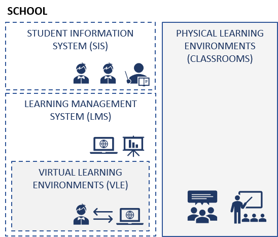
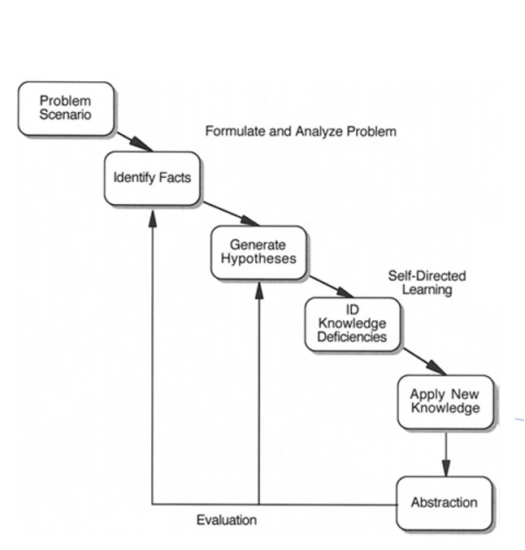
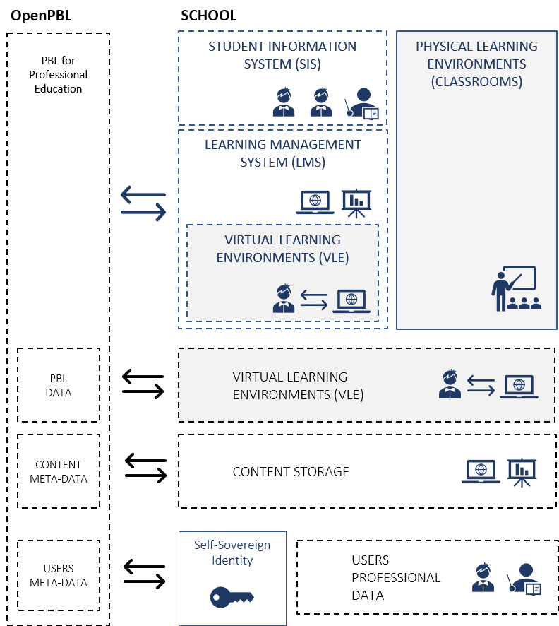
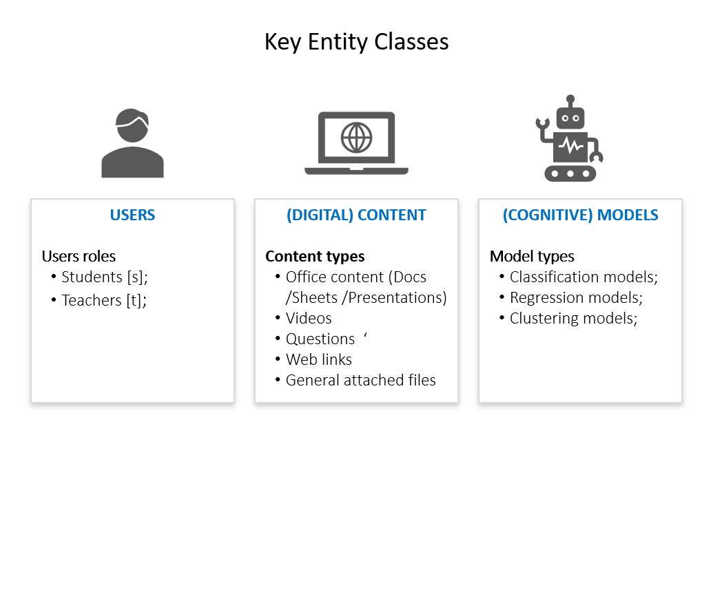

Open-source problem-based learning
OPEN-PBL APP is an open source software that manages problem-based learning experiences taken in vocational education. Schools can use the OPEN-PBL APP for free to ensure that their learning experiences are aligned with problem-based learning's theoretical framework and best practices. Small businesses can also take advantage of the problem-based learning approach's benefits by using OPEN-PBL APP for free in their employee training and development. What is PBL Problem-Based Learning (PBL) is a learning strategy adopted - wholly or partially - by some schools in their educational architecture. At PBL, students learn by solving problems and reflecting on their experiences. They work in small collaborative groups where they learn what they need to solve a problem presented. In this context, the teacher acts more as a facilitator to guide student learning than as the holder of knowledge, as in traditional learning approaches. Harvard, Minerva and the tech school '42' are some examples of successful initiatives of using PBL to develop professional higher skills. The strength of adopting the PBL strategy in vocational education lies in the pragmatism of their learning experiences, which helps to speed up students' employability gains in the labor market.
| CLASSICAL SCHOOL SYSTEMS | PBL TUTORIAL PROCESS |
|---|---|
|  |  |
Why using OPEN-PBL APP Despite the advantages of adopting PBL-based educational architectures, only few schools fully embrace the PBL approach because it requires more expensive academic resources as they are often scarce and poorly scalable. The OPEN-PBL APP helps schools and businesses address these constraints by providing a set of features for managing the execution of class trails to discuss problem-cases solving, such as business and medical case study classes, sessions for discussion of tech projects solutions and more. To ensure the integrity of the application of PBL tutorial process, OPENPBL APP:
| OPEN-PBL APP | ACTORS OF LEARNING PROCESS |
|---|---|
|  |  |
OPEN-PBL APP’s set of features enables schools and businesses to embrace the PBL strategy in their architecture and educational systems without the need of acquiring expensive and non scalable academic resources. Thus, they can ensure the proper application and measurement of the effectiveness of educational architectures to:
More details at:
The process of conceptualizing and outlining the architecture of OPEN-PBL APP originated from doctoral research from the Department of Informatics of PUC-Rio. Currently, code development is coordinated by OPEN-PBL.ORG, which is responsible for applying best international practices for the creation, versioning and licensing of free code. Universalization of PBL The primary mission of OPEN-PBL.ORG is to foster the use of PBL by social organizations, governments and small businesses that would otherwise not have access to the resources required for its adoption. Licensing The license to use OPEN-PBL APP is BSD. The code as well as all instructions for its secure deployment can be accessed at github.com/openpbl. Monitor of PBL practices OPEN-PBL.ORG maintains, in partnership with ”The Interdisciplinary Journal of Problem-Based Learning”, the publication of a monitor of new academic studies and PBL application cases. The content of PBL Monitor is aimed at teachers, educators, T&D professionals, and education executives interested in following developments and discussions about the PBL learning strategy. Support for social actions OPEN-PBL.ORG maintains a voluntary consultancy program for the free implementation of the OPEN-PBL application in educational initiatives promoted by municipal governments and non-profit organizations.
Virtual Learning Environments OPEN-PBL uses the virtual environment of the Google Classroom (GC) free application as the default interface for interacting with (and between) the actors involved in the learning process. The interaction is made in the following environments:
Instructional planning and design Key functionalities for instructional planning and execution provided by OPEN-PBL APP in the teacher and student interaction GC environments are:
Learning experiences Key features for managing learning experiences provided by OPEN-PBL APP in GC teacher and student interaction environments are: